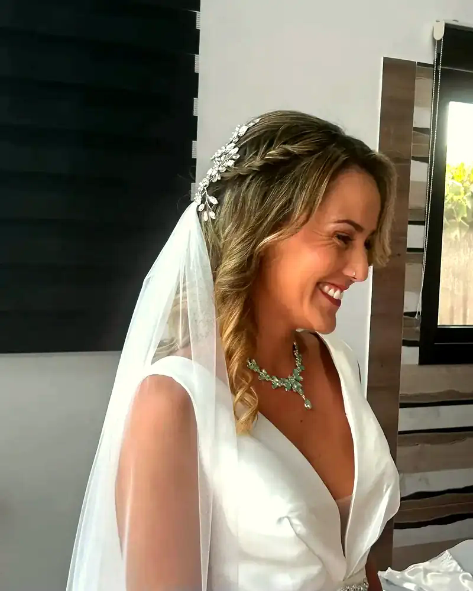
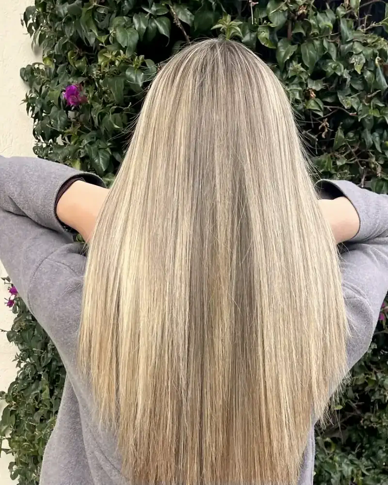
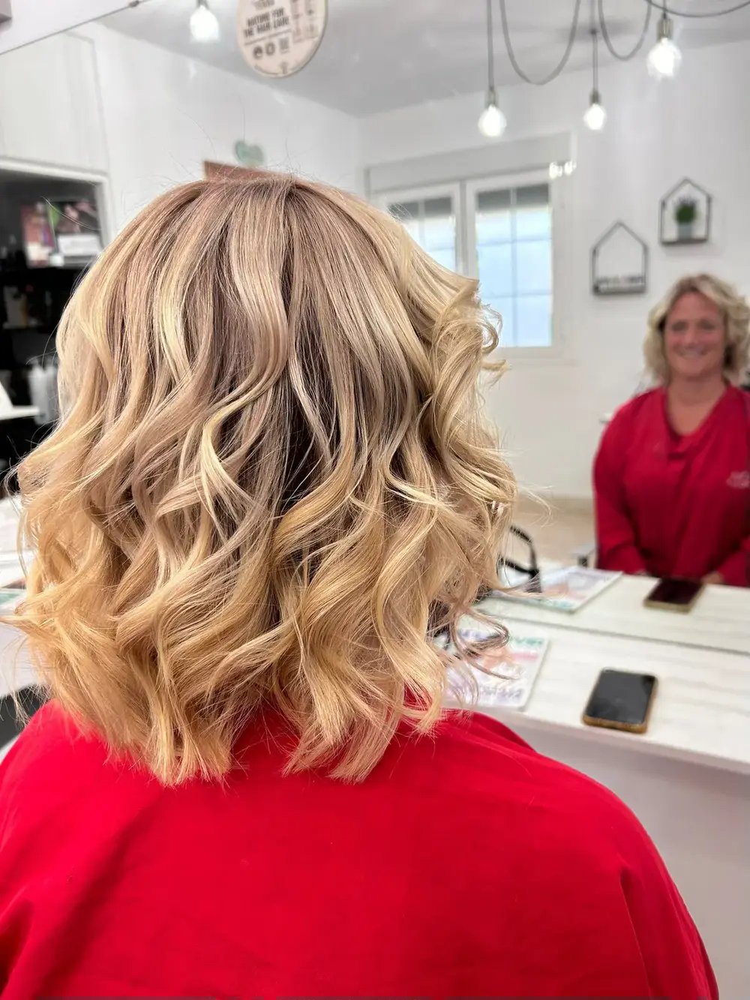
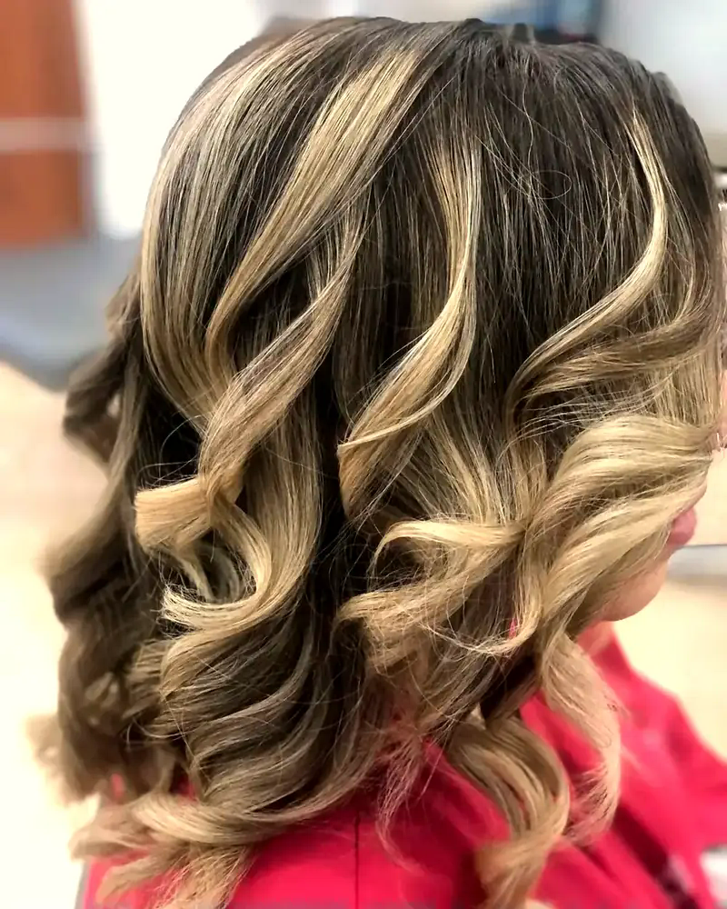
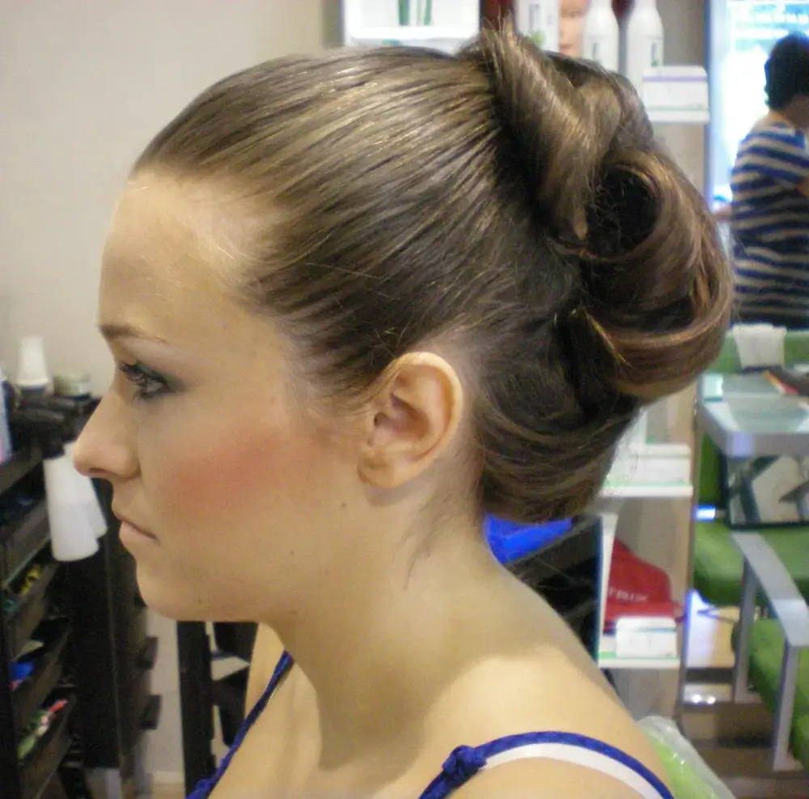
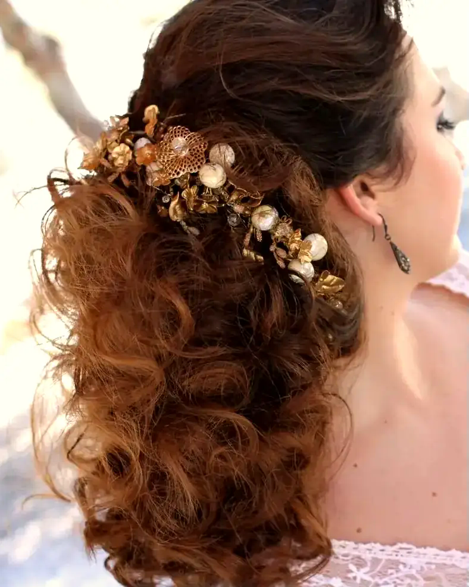
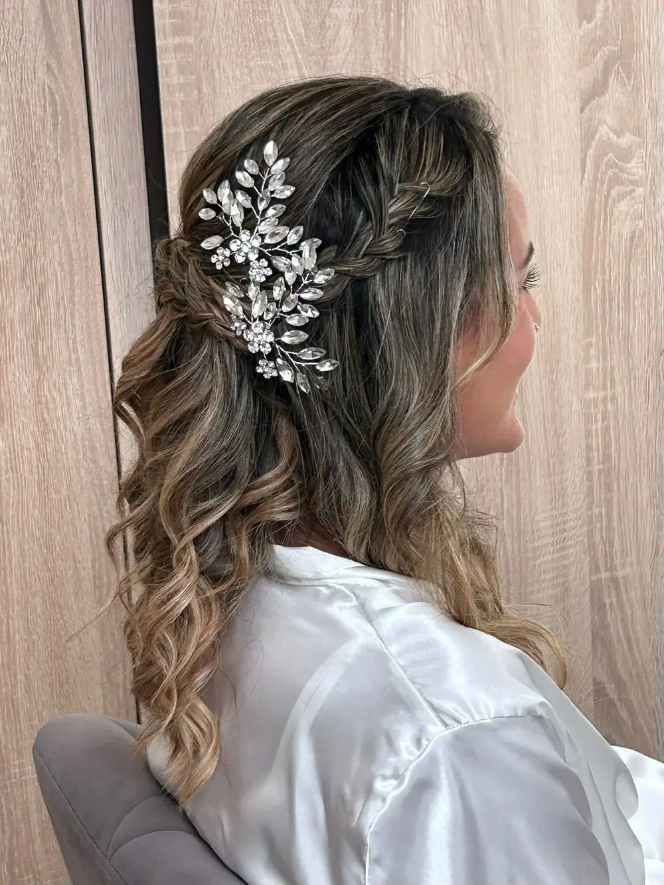

Corte, color, recogidos y maquillaje para novias e invitadas, en Coín.
Reserva por WhatsAppEn Patriche Hairdresser transformamos tu estilo con pasión y profesionalidad. Patri escucha lo que buscas, te explica cada paso y trabaja con productos de alta calidad en un ambiente cercano y tranquilo.
Desde un corte que respete tu rizo hasta el peinado y maquillaje de tu boda: cada detalle cuenta.


Cortes a medida, también para pelo rizado, pensados para que tu pelo funcione cada día.

Tintes y mechas, con tratamientos de hidratación para recuperar el pelo castigado.

Recogidos y semirecogidos para bodas, comuniones y eventos, con flores o joyas si lo deseas.
Peinado y maquillaje para novias e invitadas, para que te veas tú misma en tu mejor versión.


“Solo buenos comentarios puedo poner! Patricia tiene la mejor de las energías, entendió el corte que quería hacerme y me explicó todo. Muy profesional y yo muy conforme. Definitivamente voy a volver!”
Tatiana
“Trato muy familiar, he logrado recuperar mi rizo tras mucho tinte y mechas. Los productos son de calidad y los tratamientos de hidratación merecen mucho la pena porque recuperas tu pelo en cuestión de poco tiempo”
María
“Muy satisfecha con la experiencia! Soy nueva en el pueblo y he buscado por reseñas una peluquería por la zona y me decidí por Patriche-Hairdresser. Estoy muy contenta con mi decisión, Patri que me ha atendido con mucha amabilidad y profesionalidad. Muy recomendable.”
Mariola
“Excelente experiencia en Patriche Hairdressed. El personal es profesional y amable, ella hizo un trabajo fantástico con mi corte, además el ambiente es relajante y usan productos de alta calidad. ¡Muy recomendable!”
Victor
Reseñas de Google (5,0 ★ · 73 opiniones), citadas tal cual.
| Lunes | Cerrado |
| Martes – Viernes | 9:00 – 19:00 |
| Sábado | 10:00 – 14:00 |
| Domingo | Cerrado |